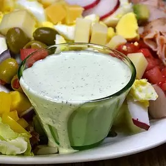

Ranch Dressing

Description
Spicy buttermilk ranch dressing. Creamy dressing with a bit of a kick. Great for salads, veggies and wings.
Ingredients
- 1 tsp Hidden Valley Buttermilk Ranch Dressing Mix
- 1 cup mayonnaise
- 1/2 cup buttermilk
- 1/4 tsp black pepper
- 1/8 tsp garlic powder
- 1/8 tsp cayenne pepper
- 1/8 tsp paprika
Steps
- Put mayonnaise and buttermilk into a medium sized bowl and stir with a fork or whisk to combine.
- Add contents of ranch packet, black pepper, garlic powder, cayenne pepper, and paprika. Stir or wisk until ingredients are well mixed.
- Refrigerate for 30 minutes to allow dressing to thicken.
- Dressing will keep in the fridge for up to two weeks.